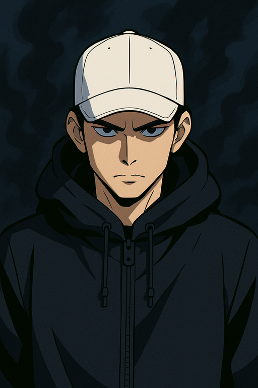
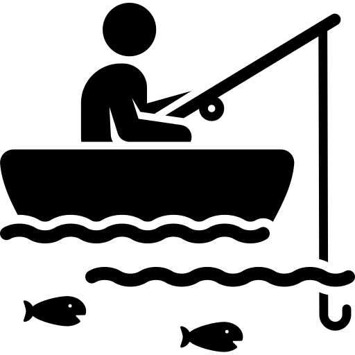

Hello
is a passionate programmer who loves solving problems and bringing ideas to life through code. With a knack for innovation and a drive to keep learning.
My Skills

Web programing
My Hobby is programing for fun—building projects, experimenting with tech, and sharpening skills without pressure. It’s a creative way to explore and innovate!.

Fishing
I enjoy fishing because it's a fun and relaxing activity that helps clear my mind. I've loved it since I was in 7th grade, and it has become a great way to unwind and connect with nature.
Get In Touch
Let's Connect! Have questions or ideas? Reach out—we’d love to hear from you!
Drop us a message, and let's start a conversation.
CONTACT ME© 2025 Candra Adi @The Code Journey